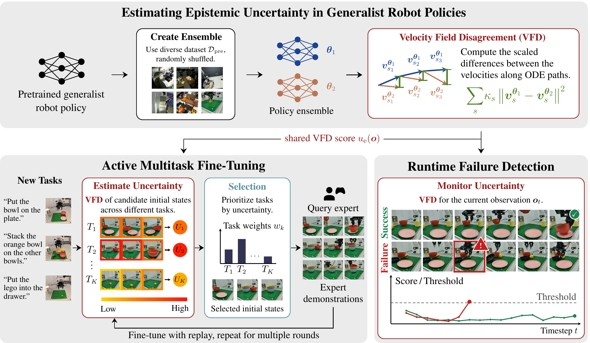
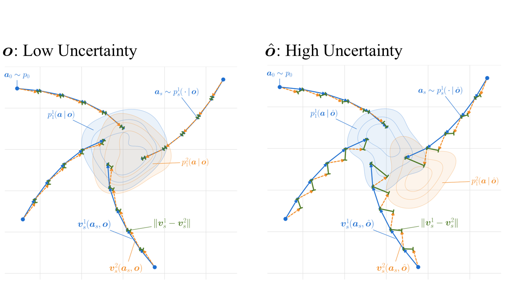
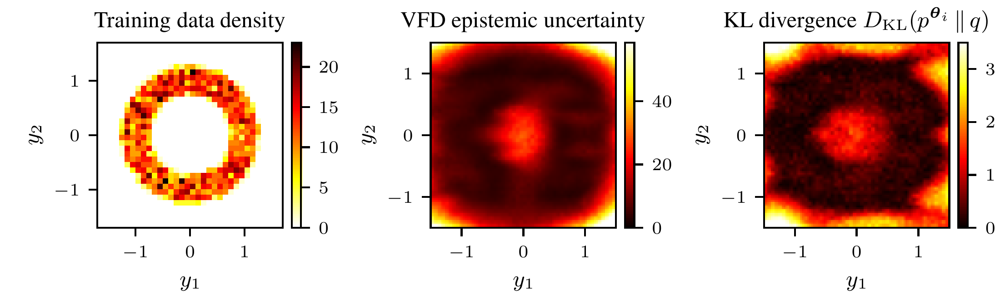
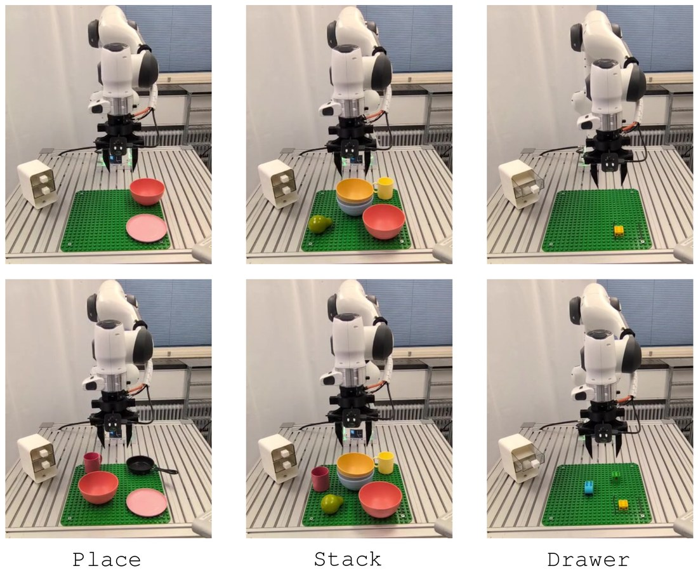
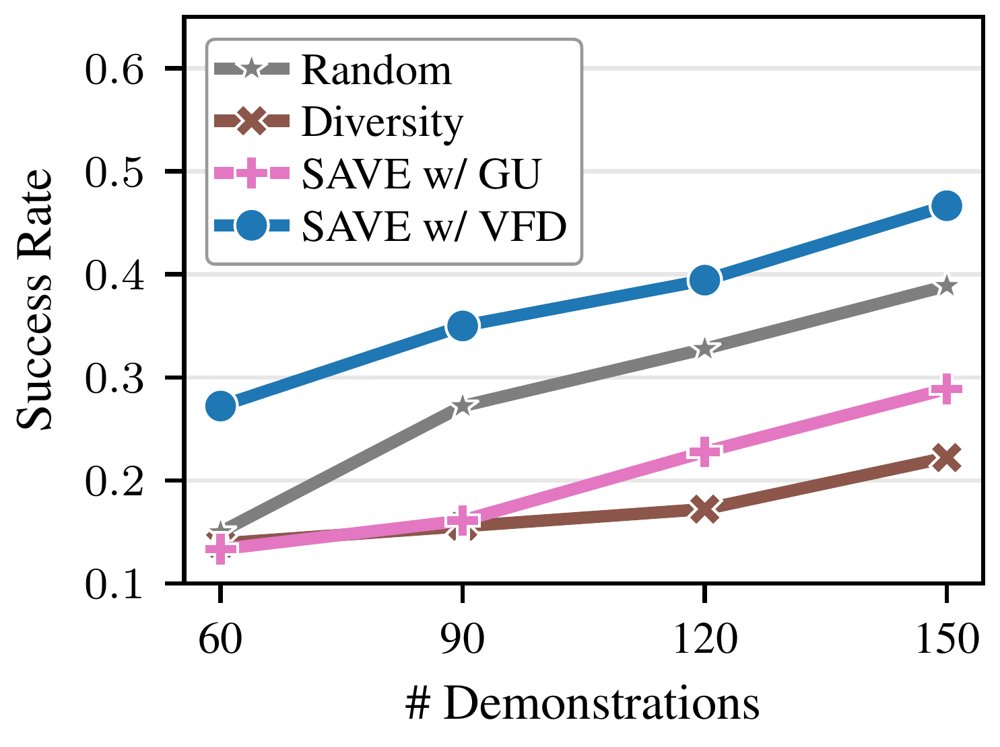
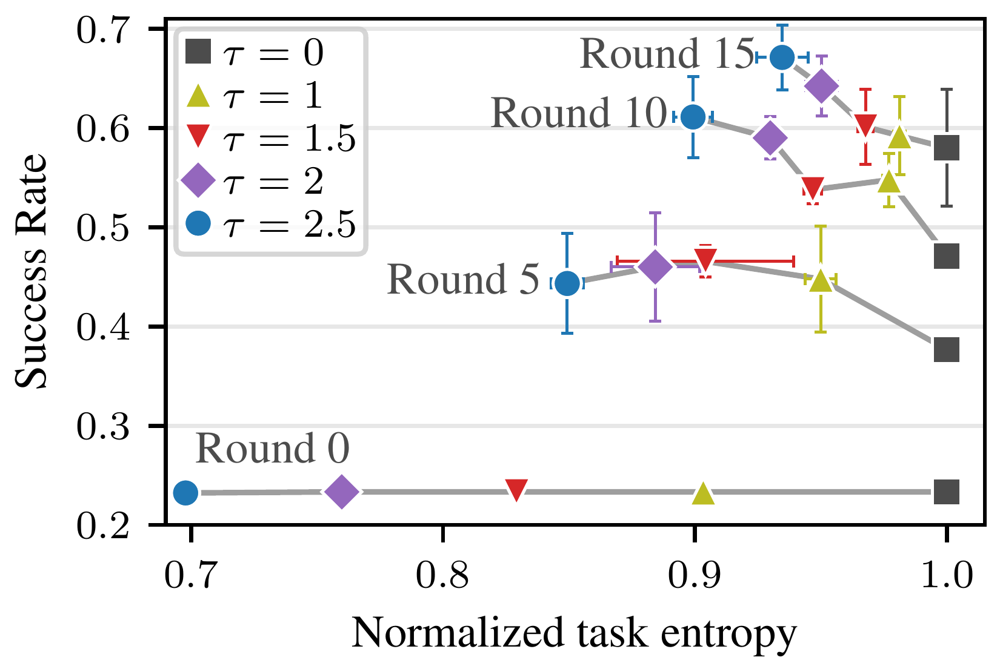

Abstract
Generalist robot policies, such as vision-language-action models (VLAs) and world-action models (WAMs), combine powerful pretrained backbones with expressive generative action heads trained via flow matching on large-scale robotic datasets. Despite their strong empirical performance in robotic manipulation, these policies lack mechanisms to quantify confidence in their predictions and to detect when their actions may be unreliable. This presents a critical limitation for real-world deployment in non-stationary environments, where models inevitably encounter scenarios outside their pretraining distribution and may fail without warning. To address this, we derive an efficient method to quantify epistemic uncertainty in flow-matching models by leveraging velocity-field disagreement (VFD) across a small ensemble. We successfully use this uncertainty estimate for detecting failures during deployment and active fine-tuning of flow-based generalist policies. For the latter, we propose SAVE, a simple yet effective method for uncertainty-guided active multitask fine-tuning that reduces the number of costly expert demonstrations required to adapt generalist policies to new tasks. We conduct experiments in simulation and the real world, across VLAs and a WAM. VFD yields better-calibrated uncertainty estimates predictive of downstream performance and detects failures with 8 pp higher overall accuracy than existing methods. Across three real-world tasks, SAVE improves final average success from 39% to 47% with a fixed demonstration budget. Our results show that measuring epistemic uncertainty with VFD enhances both failure awareness and adaptation of generalist robot policies.
Overview

Motivation
Modern generalist robot policies pair a pretrained vision-language or video backbone with an action generation via flow matching. Yet deploying them in the real world exposes them to non-stationarity: users repurpose robots for novel tasks, object appearances change, and environments evolve.
- Generalist policies confidently execute erratic actions in out-of-distribution scenarios rather than abstaining or asking for help.
- They cannot communicate what they do not know, preventing timely failure detection and robust self-improvement.
- Robustly adapting them to new domains currently requires collecting large numbers of costly expert demonstrations.
We address these challenges by quantifying epistemic uncertainty in flow-based policies through velocity-field disagreement (VFD), and use it both to detect failures at deployment and to guide data-efficient adaptation with SAVE (sample-efficient active fine-tuning via velocity-field epistemic uncertainty).
Velocity-Field Disagreement

VFD measures the disagreement between the velocity fields of a small ensemble of flow-matching models along their generative ODE trajectories. The estimator is mathematically grounded, computationally tractable, and naturally handles the high-dimensional, multimodal action distributions of generalist policies. On a 2D toy problem, VFD is high precisely where inputs lie far outside the training distribution, closely matching the KL divergence between the learned and ground-truth conditional distributions.

Experimental Setup
We evaluate VFD in simulation and the real world. In simulation, we use Push-T, the long-horizon
LIBERO-Long suite, and LIBERO-Plus, whose perturbations of object layouts, camera
viewpoints and more yield a wide range of failure modes. In the real world, an FR3 robot learns three new tasks:
placing a bowl on a plate (Place), stacking a bowl on top of three other bowls (Stack),
and placing a Lego brick into a drawer and closing it (Drawer).
We use three generalist policies, the VLAs SmolVLA (550M) and X-VLA (900M) and the
world-action model FastWAM (6B), as well as an FM-Policy trained from scratch on Push-T. The main
experiments use an ensemble of only two members.

Sample-Efficient Active Fine-Tuning
SAVE uses VFD to decide which expert demonstrations to collect: it prioritizes tasks by their uncertainty and, within each sampled task, queries demonstrations for the most uncertain initial states. We compare it to random selection, visual diversity (k-center greedy), AMF, and SAVE with GU or Action-L2 in place of VFD. SAVE w/ VFD consistently yields the highest area under the learning curve (AULC) and success rate over the last three rounds (Last-3 SR) across all policies and environments, with a +1.9 to +5.1 pp gain in Last-3 SR over the strongest baseline in each setting. The ordering VFD > GU > Action-L2 mirrors the calibration results (below), highlighting the importance of well-calibrated uncertainty for guiding active fine-tuning.
| Benchmark | Push-T | LIBERO-Long | ||||||
|---|---|---|---|---|---|---|---|---|
| Policy | FM-Policy | SmolVLA | X-VLA | FastWAM | ||||
| Method | AULC | Last-3 SR | AULC | Last-3 SR | AULC | Last-3 SR | AULC | Last-3 SR |
| Random | 38.0±3.2 | 46.3±3.1 | 44.6±2.2 | 52.6±3.3 | 37.7±1.2 | 45.1±0.3 | 54.2±2.5 | 64.8±6.6 |
| Diversity | 40.5±1.9 | 51.2±3.2 | 45.5±1.8 | 53.1±2.0 | 40.2±1.9 | 49.0±3.3 | 53.9±0.8 | 63.9±0.3 |
| AMF | N/A | N/A | 45.6±3.3 | 59.4±3.3 | 39.5±1.9 | 51.0±1.3 | 55.6±1.4 | 69.4±1.3 |
| SAVE w/ GU | 44.7±2.9 | 54.3±3.3 | 48.6±5.0 | 61.0±2.9 | 40.7±3.5 | 49.2±1.8 | 59.0±4.4 | 70.6±6.1 |
| SAVE w/ Action-L2 | 39.8±3.4 | 45.0±2.6 | 47.2±5.1 | 55.5±6.8 | 39.2±0.9 | 50.9±2.2 | 57.0±3.3 | 71.6±5.2 |
| SAVE w/ VFD | 46.6±2.5 | 59.3±3.1 | 52.3±2.2 | 66.1±2.8 | 42.5±1.0 | 52.9±2.9 | 61.1±3.5 | 74.8±3.3 |
In the real world, SAVE w/ VFD consistently achieves success rates that the baselines reach only after at least 30 additional demonstrations, if at all. At 150 demonstrations, it yields an average task success of 47%, between +8 and +25 pp higher than the baselines. Uncertainty guidance benefits both task and initial-state selection: SAVE w/ VFD allocates demonstration budget to the tasks that require it most, trading off diversity in selected tasks for faster multitask improvement.


Failure Detection
Beyond guiding data collection, VFD also signals when a deployed policy is about to fail. We roll out the policy, compute VFD at each action-generation timestep, and calibrate thresholds from only 20 (real world: 10) successful rollouts per task using conformal prediction, i.e., without any failure data. In the real world, we create out-of-distribution scenarios by adding novel background objects, such as pieces of fruit or a pan. We compare against OOD detectors trained on the policies' training data (RND-OE, logpZO), temporal consistency of the action distributions (STAC), and action-chunk entropy (ACE).
VFD achieves a balanced accuracy of 72% across all environments, 8 pp higher than the strongest baseline, logpZO. Unlike observation-based OOD detectors, VFD reliably distinguishes benign OOD situations in which the policy still succeeds from actual failures, achieving a true negative rate of 81% compared to 58% (logpZO) and 54% (RND-OE). This makes VFD well suited for runtime monitoring of capable generalist policies that can handle some, but not all, novel scenarios.
| Push-T | LIBERO-Plus | Real World | Average | |||||
|---|---|---|---|---|---|---|---|---|
| Method | Acc. ↑ | TWA ↑ | Acc. ↑ | TWA ↑ | Acc. ↑ | TWA ↑ | Acc. ↑ | TWA ↑ |
| STAC | 0.55±0.00 | 0.51±0.00 | 0.70±0.03 | 0.59±0.02 | 0.43±0.02 | 0.42±0.02 | 0.56±0.02 | 0.51±0.01 |
| logpZO | 0.53±0.01 | 0.51±0.02 | 0.68±0.02 | 0.62±0.01 | 0.70±0.03 | 0.64±0.03 | 0.64±0.02 | 0.59±0.02 |
| RND-OE | 0.50±0.02 | 0.50±0.02 | 0.67±0.01 | 0.62±0.01 | 0.69±0.04 | 0.61±0.02 | 0.62±0.00 | 0.58±0.00 |
| ACE | 0.55±0.06 | 0.51±0.03 | 0.75±0.02 | 0.59±0.02 | 0.54±0.01 | 0.50±0.00 | 0.61±0.02 | 0.54±0.02 |
| VFD (ours) | 0.64±0.05 | 0.56±0.05 | 0.79±0.00 | 0.65±0.00 | 0.73±0.01 | 0.58±0.00 | 0.72±0.02 | 0.60±0.02 |
Calibration
We measure how well uncertainty estimates reflect a policy's task-completion capabilities by the Spearman rank correlation between per-task uncertainty and success rate over iterative fine-tuning rounds on LIBERO-Long. Across all three generalist policies, VFD is more strongly correlated with task success than all baselines, with negative Spearman correlations between 0.05 and 0.17 higher than the best-performing baseline, GU. The VFD uncertainty of a policy on the initial frames is thus a strong indicator of how difficult the respective task is for that policy.
| Policy | Action-L2 | ACE | DECU | GU | VFD (ours) |
|---|---|---|---|---|---|
| SmolVLA | 0.50±0.13 | 0.31±0.12 | 0.31±0.13 | 0.62±0.00 | 0.71±0.03 |
| X-VLA | 0.33±0.24 | 0.14±0.05 | 0.06±0.04 | 0.48±0.06 | 0.53±0.02 |
| FastWAM | −0.12±0.06 | −0.29±0.07 | 0.03±0.07 | 0.27±0.04 | 0.44±0.17 |
Computational Cost
Computing VFD requires a second policy and evaluating both velocity fields for a batch of action chunks at several flow times. With the default two-member ensemble, this adds 89 ms per action generation in our real-world rollouts. Evaluating a single flow time and a single action chunk reduces the overhead to 32 ms (1.19× the base policy), while balanced accuracy only drops from 0.73 to 0.70. Perturbing the policy's weights with layer-normalized Gaussian noise instead of training a second model still reaches a balanced accuracy of 68%, which is 14 to 25 pp above the two training-free baselines, STAC and ACE.
| Posterior approximation |
# Flow times, batch size |
Balanced accuracy |
Inference time |
vs. base policy |
|---|---|---|---|---|
| Ensemble (4) | 4, 8 | 0.78±0.00 | +251 ms | 2.48× |
| Ensemble (2) | 4, 8 | 0.73±0.01 | +89 ms | 1.53× |
| Ensemble (2) | 1, 8 | 0.72±0.01 | +49 ms | 1.29× |
| Ensemble (2) | 1, 1 | 0.70±0.02 | +32 ms | 1.19× |
| Weight perturbation | 1, 1 | 0.68±0.01 | +29 ms | 1.17× |
Highlights
- A mathematically grounded epistemic uncertainty estimator for flow-matching models based on velocity-field disagreement (VFD), requiring only a two-member ensemble.
- SAVE, a simple yet effective method for uncertainty-guided active fine-tuning that uses VFD to prioritize tasks and initial states for expert demonstration collection.
- VFD yields better-calibrated uncertainty estimates predictive of downstream task performance across two VLAs and a world-action model.
- SAVE w/ VFD learns new tasks with fewer demonstrations in simulation and improves final average success on three real-world tasks from 39% to 47%.
- VFD detects deployment failures with 8 pp higher balanced accuracy than existing methods, at a modest inference overhead.
BibTeX
@article{romer2026uq_vla,
title={Uncertainty Quantification for Flow-Based Generalist Robot Policies},
author={Ralf R{\"o}mer and Maximilian Seeliger and Saida Liu and Ben Sturgis and Marco Bagatella and Daniel Marta and Andreas Krause and Angela P. Schoellig},
journal={arXiv preprint arXiv:2606.18043},
year={2026}
}